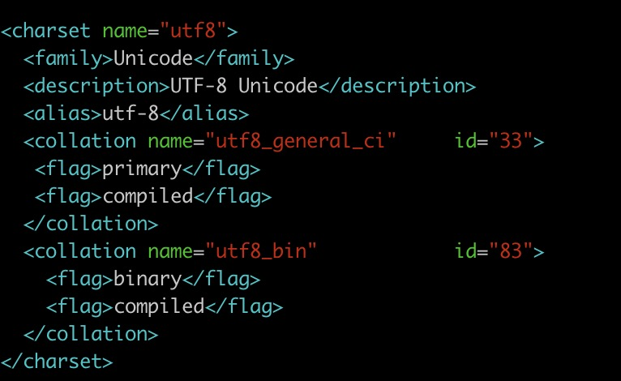

去年趁有优惠活动租了个腾讯云，之前搭了Wordpress，用了一段时间后感觉不太好用，还是转回Hugo了，然后这个服务器就一直闲置了，最近一段时间从各种途径得到了三本关于mysql的书，猛然发觉上次写sql已经是快三年前的事了，东西又快忘光了，遂准备把这三本书撸一遍，正好用这个服务器搭一个mysql，在服务器上练习。
系统环境
重装了一下系统，选的是最新的系统版本：
[ankang@VM_0_13_centos ~]$ cat /etc/redhat-release
CentOS Linux release 7.5.1804 (Core)
安装mysql
一般网上给出的资料都是
[ankang@VM_0_13_centos ~]$ sudo yum install mysql
[ankang@VM_0_13_centos ~]$ sudo yum install mysql-server
[ankang@VM_0_13_centos ~]$ sudo yum install mysql-devel
安装mysql和mysql-devel都成功，但是安装mysql-server失败，报错如下：
[ankang@VM_0_13_centos ~]$ sudo yum install mysql-server
[sudo] password for ankang:
Loaded plugins: fastestmirror, langpacks
Loading mirror speeds from cached hostfile
No package mysql-server available.
Error: Nothing to do
查资料发现是CentOS 7 版本将MySQL数据库软件从默认的程序列表中移除，用mariadb代替了。
有两种解决办法：
方法一：安装mariadb
MariaDB数据库管理系统是MySQL的一个分支，主要由开源社区在维护，采用GPL授权许可。开发这个分支的原因之一是：甲骨文公司收购了MySQL后，有将MySQL闭源的潜在风险，因此社区采用分支的方式来避开这个风险。MariaDB的目的是完全兼容MySQL，包括API和命令行，使之能轻松成为MySQL的代替品。
安装命令如下：
[ankang@VM_0_13_centos ~]$ sudo yum install mariadb-server mariadb
mariadb的相关命令是：
systemctl start mariadb #启动MariaDB
systemctl stop mariadb #停止MariaDB
systemctl restart mariadb #重启MariaDB
systemctl enable mariadb #设置开机启动
所以先启动数据库
[ankang@VM_0_13_centos ~]$ sudo systemctl start mariadb
然后就可以正常使用mysql了，注意刚装好mysql的时候是没有密码的，所以提醒输入密码的时候，只需要敲一下回车就好了。
[ankang@VM_0_13_centos ~]$ mysql -u root -p
Enter password:
Welcome to the MariaDB monitor. Commands end with ; or \g.
Your MariaDB connection id is 8
Server version: 5.5.60-MariaDB MariaDB Server
Copyright (c) 2000, 2018, Oracle, MariaDB Corporation Ab and others.
Type 'help;' or '\h' for help. Type '\c' to clear the current input statement.
MariaDB [(none)]> show databases;
+--------------------+
| Database |
+--------------------+
| information_schema |
| mysql |
| performance_schema |
| test |
+--------------------+
4 rows in set (0.00 sec)
安装mariadb后显示的也是 MariaDB [(none)]> ，可能看起来有点不习惯。下面是第二种方法。
方法二：官网下载安装mysql-server
[ankang@VM_0_13_centos ~]$ wget http://dev.mysql.com/get/mysql-community-release-el7-5.noarch.rpm
[ankang@VM_0_13_centos ~]$ sudo rpm -ivh mysql-community-release-el7-5.noarch.rpm
[ankang@VM_0_13_centos ~]$ sudo yum install mysql-community-server
在mysql安装过程中如下内容：
Installed:
mysql-community-client.x86_64 0:5.6.43-2.el7 mysql-community-devel.x86_64 0:5.6.43-2.el7
mysql-community-libs.x86_64 0:5.6.43-2.el7 mysql-community-server.x86_64 0:5.6.43-2.el7
Dependency Installed:
mysql-community-common.x86_64 0:5.6.43-2.el7 numactl-libs.x86_64 0:2.0.9-7.el7
Replaced:
mariadb.x86_64 1:5.5.60-1.el7_5 mariadb-devel.x86_64 1:5.5.60-1.el7_5 mariadb-libs.x86_64 1:5.5.60-1.el7_5
mariadb-server.x86_64 1:5.5.60-1.el7_5
Complete!
所以安装完以后mariadb自动就被替换了，将不再生效。
[ankang@VM_0_13_centos ~]$ rpm -qa |grep mariadb
[ankang@VM_0_13_centos ~]$
安装成功后重启mysql服务。
[ankang@VM_0_13_centos ~]$ sudo service mysqld restart
初次安装mysql，root账户没有密码。
[ankang@VM_0_13_centos ~]$ mysql -u root
Welcome to the MySQL monitor. Commands end with ; or \g.
Your MySQL connection id is 2
Server version: 5.6.43 MySQL Community Server (GPL)
Copyright (c) 2000, 2019, Oracle and/or its affiliates. All rights reserved.
Oracle is a registered trademark of Oracle Corporation and/or its
affiliates. Other names may be trademarks of their respective
owners.
Type 'help;' or '\h' for help. Type '\c' to clear the current input statement.
mysql> show databases;
+--------------------+
| Database |
+--------------------+
| information_schema |
| mysql |
| performance_schema |
| test |
+--------------------+
4 rows in set (0.00 sec)
mysql>
设置密码
mysql> set password for root@localhost = password('xxx');
Query OK, 0 rows affected (0.01 sec)
mysql>
不需要重启数据库即可生效。
配置mysql
1、编码
mysql配置文件为/etc/my.cnf
最后加上编码配置
[mysql]
default-character-set =utf8
这里的字符编码必须和/usr/share/mysql/charsets/Index.xml中一致。

2、远程连接设置
把在所有数据库的所有表的所有权限赋值给位于所有IP地址的root用户。
[ankang@VM_0_13_centos ~]$ mysql -uroot -p
Enter password:
Welcome to the MySQL monitor. Commands end with ; or \g.
Your MySQL connection id is 5
Server version: 5.6.43 MySQL Community Server (GPL)
Copyright (c) 2000, 2019, Oracle and/or its affiliates. All rights reserved.
Oracle is a registered trademark of Oracle Corporation and/or its
affiliates. Other names may be trademarks of their respective
owners.
Type 'help;' or '\h' for help. Type '\c' to clear the current input statement.
mysql> grant all privileges on *.* to root@'%'identified by 'xxxx';
Query OK, 0 rows affected (0.00 sec)
如果是新用户而不是root，则要先新建用户
mysql> create user 'username'@'%' identified by 'xxxxx';
Query OK, 0 rows affected (0.00 sec)
此时就可以进行远程连接了。